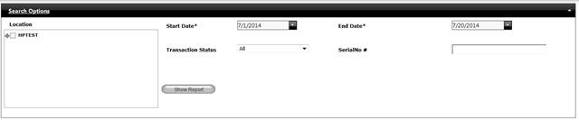
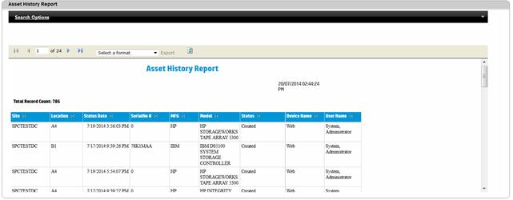

Asset History Report
Asset History report will show asset history details within a specified date range. Report data can be filtered to show history of a particular asset, by a specific location and also list based on particular status type.
History report shows every information of an asset right from create to decommission. Also provides information like using which platform (Web, Mobile) the operation performed and who (user) did the option.
To view Asset History report,
1. Navigate Reports>> Asset History Report in the DCTrackMobileWeb menu bar.
You will see the Asset History Report screen.

Figure 149: Asset History Report screen
7. Provide the required information.
8.
Click Show report  button to display the report.
button to display the report.

Figure 150: Asset History report with data